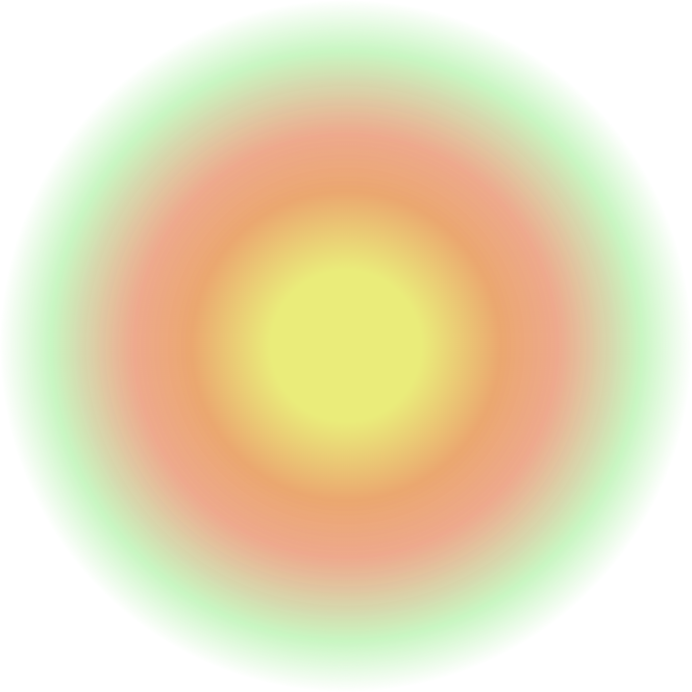

Stephanie Oh
stephanieoh@princeton.edu
VIS 208. Graphic Design: Link ("Gifting")
stephanieoh.com
gifting-stephanie
Gifting Experiments
Valentines Day HTML
Idea Seed HTML
HTML/CSS Experiments
House of Ihsan
Websites
let's be friends
website exchange